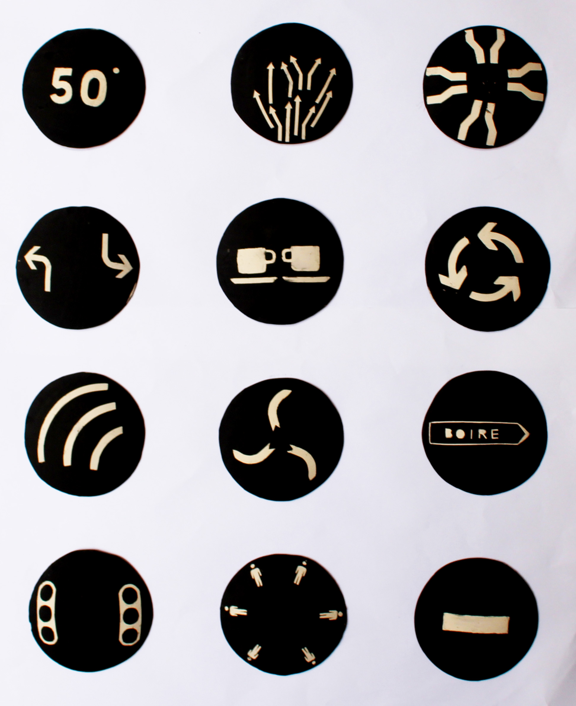

pictoramic
Lors de ce workshop avec une céramiste, je me suis questionné sur le contenant comme du contenant informatif, du contenu instructif. L’idée de contenant est donc immatérielle. J’ai utilisé différents types de symboles ou pictogrammes de signalisation et signalétique dans le but de les appliquer à l’usage d’un contenant, qui ici se réduit à sa forme la plus simple. “Diffusion d’un arôme”, “ne pas toucher”, “faire tourner”, “saisir de telle façon”, “se rassembler autour du contenant”... L’objet conseille donc directement sur son usage, il est son propre mode d’emploi.
2016
